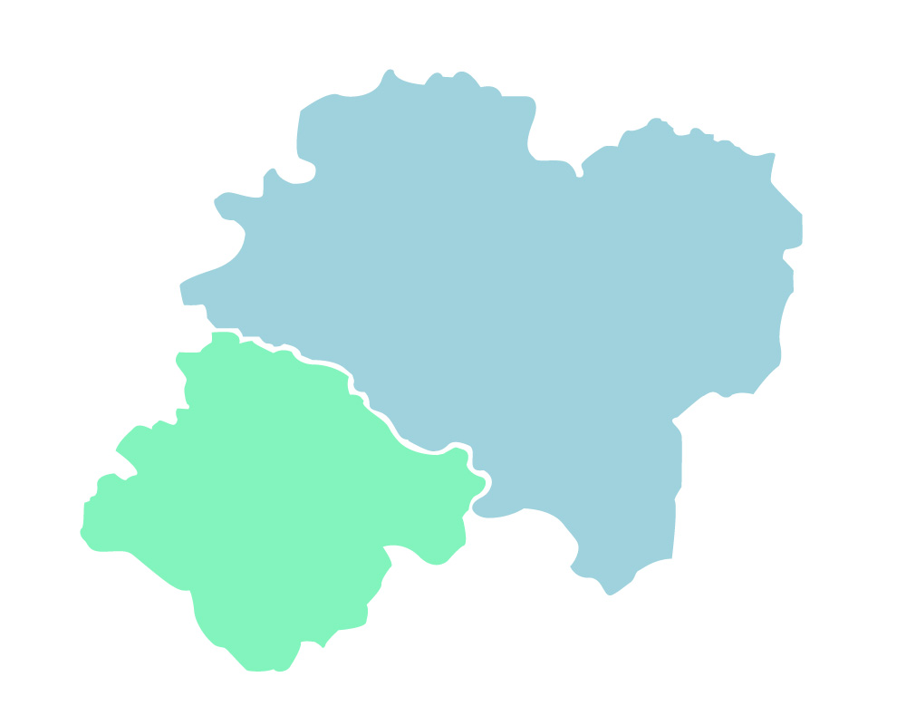

home>사업분야>도시가스
City Gas
도시가스는 공해물질이 없는
친환경 청정에너지입니다.
도시가스란?
가스전에서 채취한 천연가스(NG, Natural Gas)를 저장 및 수송에 용이하도록 영하 162℃로 냉각시켜 부피를 압축시킨 액체인 액화천연가스(LNG, Liquefied Natural Gas)로 만들고 이를 다시 기화시켜 천연가스 상태로 배관을 통해 소비자에게 공급하는 가스를 말합니다.
장점
-
public
- 친환경 청정에너지
- 도시가스는 타 연료에 비해 공해물질이 적은 청정연료로 대기를 맑게 하여 쾌적한 도시환경 조성을 가능하게 하는 깨끗한 에너지입니다.
-
factory
- 안전한 에너지
- 도시가스는 공기보다 가벼워 가스 누출 시 공기 중으로 쉽게 확산되기 때문에 화재 등의 사고 위험이 적은 안전한 에너지입니다.
-
electrical_services
- 경제적인 에너지
- 도시가스는 점화 , 소화 및 화염의 조정이 편리하고,타 연료에 비해 열효율이 높아 에너지 절약에 기여하는 경제적인 에너지 입니다.
-
compost
- 안정적 에너지
- 도시가스는 전세계에 광범위하게 매장되어 있어 석유 대체 에너지로 각광받고 있으며, 장기적으로 안정적인 공급이 가능한 에너지입니다.
공급현황
